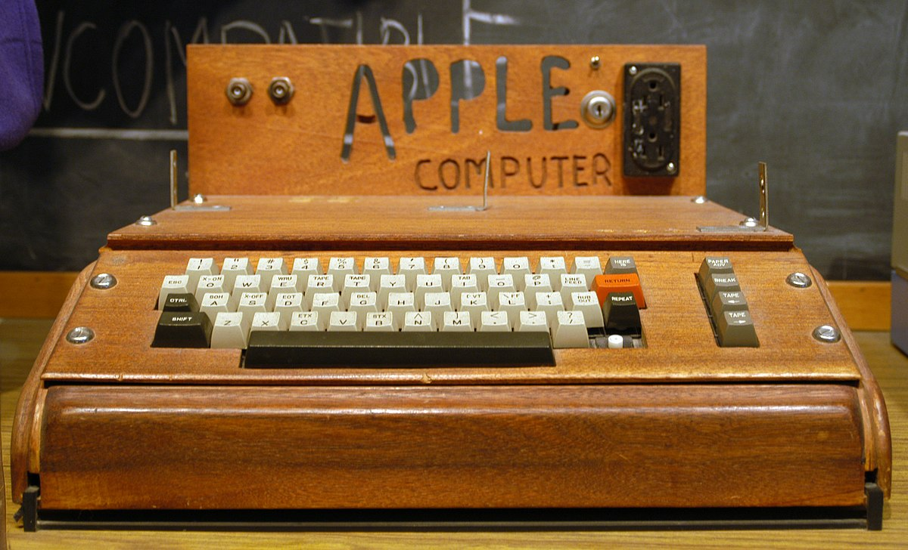
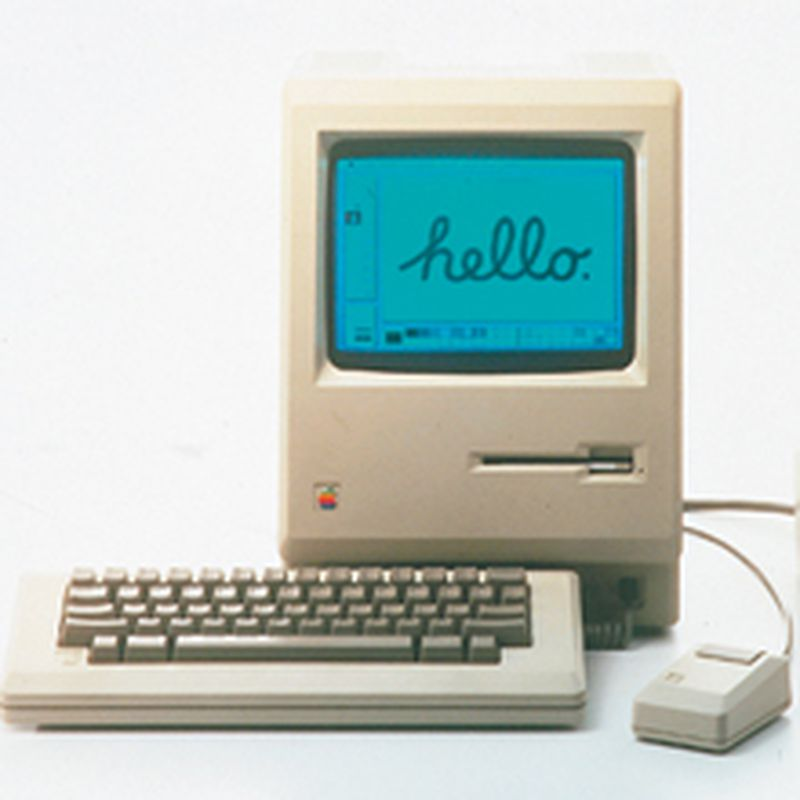
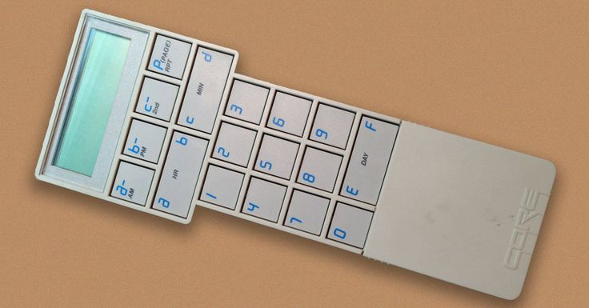

| Campos de influencia |
Aportes realizados |
Imágenes |
| Desarrollo de Hardware |
El 1 de marzo de 1976 Wozniak completó el diseño básico de la Apple I. Fue la primera vez en la historia que un personaje que se muestra en una pantalla de televisión fue generado por una computadora doméstica. |
 |
| Desarrollo de Hardware |
Wozniak diseña la Apple II, la primera computadora personal con la capacidad de mostrar gráficos en color y un lenguaje de programación BASIC integrado. |
 |
| Desarrollo de Hardware |
Wozniak tuvo gran influencia en la denominada "Macintosh 128k", se convertiría en la primera computadora personal del mercado masivo con una interfaz gráfica de usuario integral y un mouse. |
 |
| Desarrollo de Hardware |
Después de su carrera en Apple, Wozniak fundó CL 9 en 1985, que desarrolló y lanzó al mercado el primer control remoto universal programable en 1987, denominado "CORE". |
 |